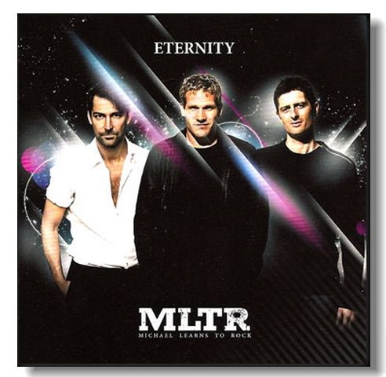
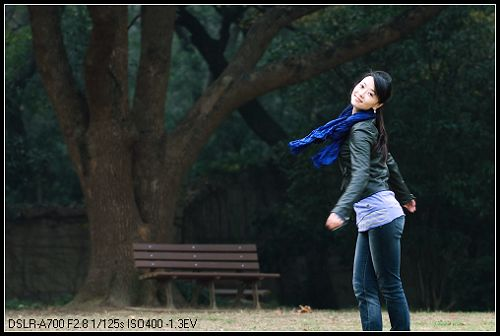
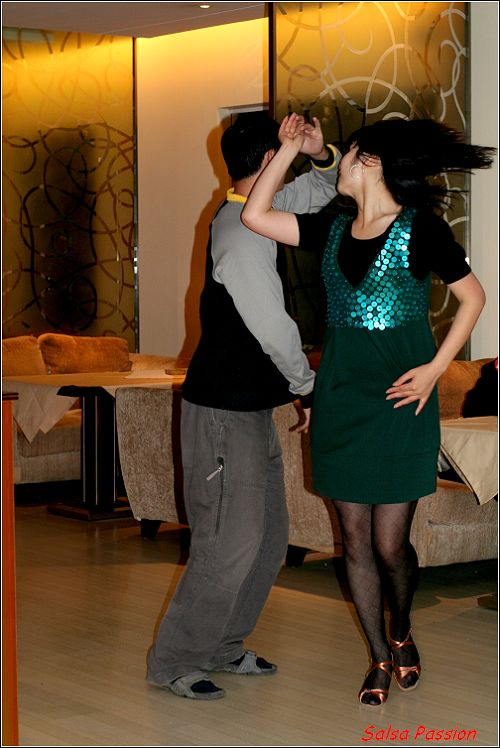
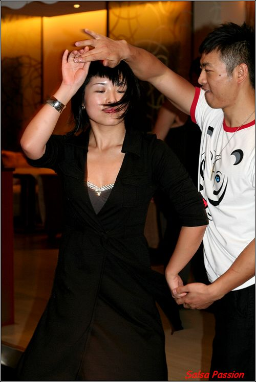
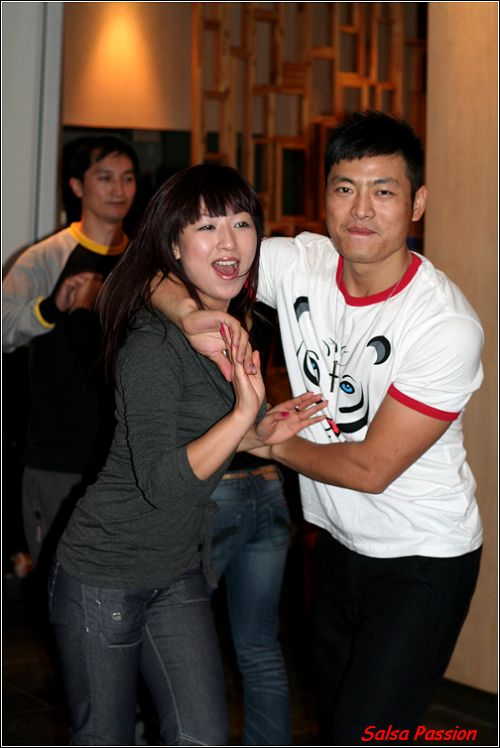
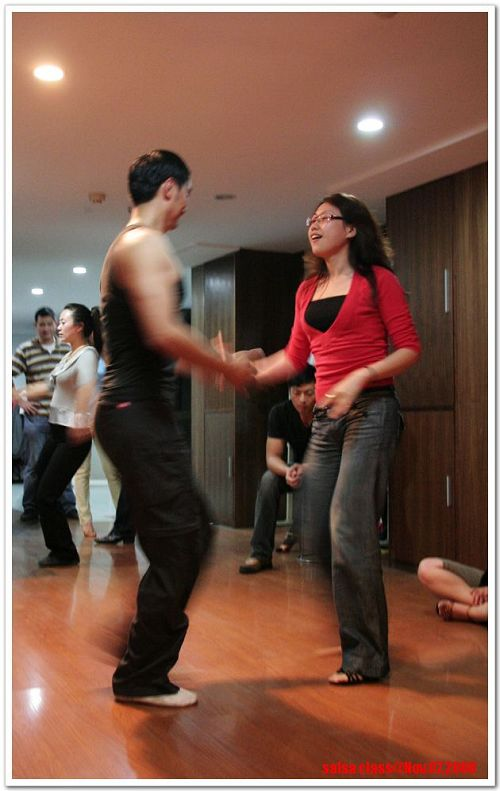
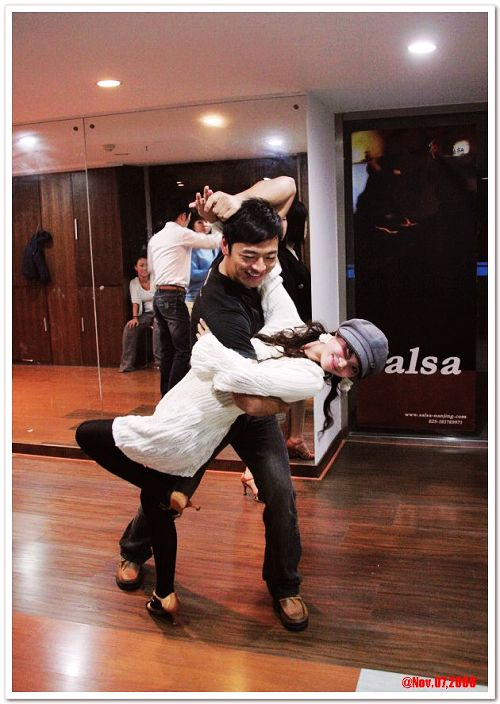
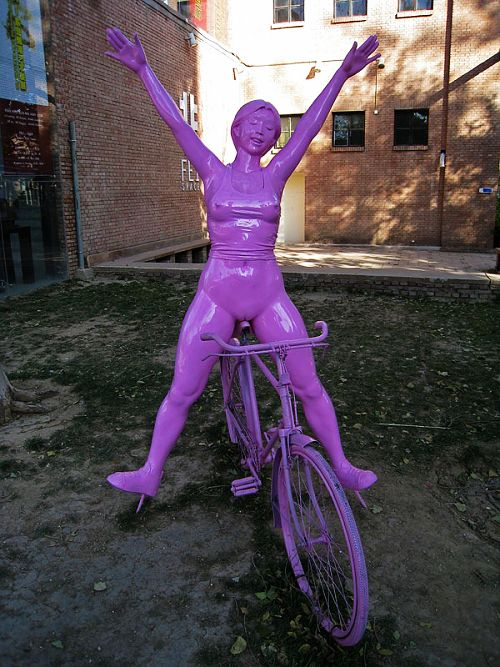

且看“中国茶”上金庸人物。 @ Nov 19, 2008
我的测试结果是：蓝凤凰
五毒教主蓝凤凰，在书中出现的次数不多，但这个半裸苗女，每一次短暂的出现，都叫人喜爱莫名，她和“无行浪子”相携，并闯少林寺一场，更令人神为之夺。蓝凤凰是上上人物。
我的测试结果是：蓝凤凰
五毒教主蓝凤凰，在书中出现的次数不多，但这个半裸苗女，每一次短暂的出现，都叫人喜爱莫名，她和“无行浪子”相携，并闯少林寺一场，更令人神为之夺。蓝凤凰是上上人物。
好了，周末臭美也臭美过了，照片也拍了，需要收收心了，现在工作完全不在状态，每天都不想上班，就想在家做做饭、听听音乐、看看电影、上上网。很高兴YC也这么想，这个嫁给比自己小7岁的女子，在我印象中一直是事业有成的形象，虽然不是倾城倾国，但漫溢的气质着实令人舒服。她和自己的先生谈了十几年恋爱，金融危机的时候结婚了。YC说她最希望的生活是早上想上班，下班的时候想回家...大多数时候我们都在违背自己的意愿生活着，象itsmin评价《Paris》那句“又寂寞又美丽”，再加上一个“又无奈”吧！
南京在一天之中就进入冬季了，单薄的被子上面加了一床花毯，早晨起来更是不知道穿什么好，这个季节的办公室是最冷的，什么时候空调才能开呢？我象冬季一样变得“冰冻”起来，除了上salsa课哪儿也没兴趣扎堆，昨晚ERIC的婚礼，虽然内心对这个瘦小的男同事心存温暖，但还是托人带了份子钱过去，祝福尽在不言中。就这么渐渐化繁为简在社交关系里，回想过去的自己，没自己什么屁事，也喜欢瞎凑热闹，生怕落下自己一个....多么可笑的一个傻大姐？！倒是越发享受现在的自己。
周末在家看了场电影:《地狱男爵II》，与现实生活相结合的神话是我最着迷的，里面那条人鱼的爱情伴随着歌曲:“I can't smile without you ”久久回荡在我的心中，好看又好听，在需要轻松快乐的时候不妨看看这部电影。前天晚上吃了火锅，引来夜晚无数的噩梦，今天晚上我要看《功夫熊猫》，会不会梦见许多有趣的卡通呢？
You know I can't smile without you
I can't smile without you
I can't laugh and I can't sing
I'm finding it hard to do anything
you see I feel sad when you're sad
I feel glad when you're glad
if you only knew what I'm going through
I just can't smile without you
you came along just like a song
and brighten my day
who would of believed that you where part of a dream
now it all seems light years away
and now you know I can't smile without you
I can't smile without you
I can't laugh and I can't sing
I'm finding it hard to do anything
you see I feel sad when your sad
I feel glad when you're glad
if you only knew what I'm going through
I just can't smile
now some people say happiness takes so very long to find
well, I'm finding it hard leaving your love behind me
and you see I can't smile without you
I can't smile without you
I can't laugh and I can't sing
I'm finding it hard to do anything
you see I feel glad when you're glad
I feel sad when you're sad
if you only knew what I'm going through
I just can't smile without you
歌曲:Shadow Side of Me.mp3
歌手:Michael Learns To Rock(迈克学摇滚)
专辑：Eternity
发行日期：2008-10-27

I feel your existence in your body
Though you try to hide it
I know there's a battle in your mind
I'm feeling the distance you are drifting
And I just can't fight it
How do we go on like this
Putting everything at risk
Hard to live
With the shadow side of me
You need what I can be
Holding on
To a *** each other man
If you're looking fot perfection
That is not the way I am
You say that you love me
But the future is too hard to promise
It's making no sense to my head
I know there's a dark side of my spirit
where you just can't find me
There is not a sending here
just a time so who cares
Hard to live
With the shadow side of me
You need what I can be
Holding on
To a *** each other man
If you're looking for perfection
That is not the way
Hard to live
With the shadow side of me
不知道是不是因为相机的缘故，朋友说没怎么P过原图，但我总觉得景深、人像真实性和期待的不同，当然无论如何都比我自己拍自己强百倍。长这么大还是第一次拍这种所谓的“写真照”，虽然从摄影到模特都是业余爱好者，呵呵~因为自己喜欢摄影，可能对于图片的要求比较高，希望拿到原图后重新尝试一下编辑。非常感谢这位友人的拍摄，希望以后还有机会相互交流摄影！
照片没有完全上传，现在是弄一些传一些，******更多照片******


银杏叶子黄了的季节，记忆中只有去年11月没有去东郊。今年补上。大多数人在这个季节会去看栖霞枫叶，而我更愿意去看银杏叶灿烂的金黄，南京还有什么地方比无梁殿那里的银杏树高大、繁茂、灿烂呢？
遗憾天公不作美，没有期待中的下午阳光，但有许多跳舞中拍摄下的PP，很喜欢，会慢慢上传到“茶”上，也算是补偿。



理照片的时候发现salsa老学员在舞动过程中的表情大部分时候都表现得很好，想来寻找“美”也是需要过程的，不是吗？
当我们还是salsa初学水平时，光顾着学动作记动作，这一切忙完才会考虑到如何让形体表达的更完美，之后是不是才会照顾到面部表情？！
理照片时还发现跳salsa时间长的同学，很会穿着打扮，一个知道如何表达形体美的人，才会懂得如何穿出适合自己得气质来？！再仔细观察一下女孩子的手形....以前我学习舞蹈的时候，老师总强调让感觉延伸到手指尖。无论做什么事情........细节永远起了关键性的作用，舞蹈更是，缺那么一点，效果差了很多。
那么，我们不仅是在学习salsa，同时也在学习如何表达美！salsa似乎不象专业舞蹈那么挑人，年龄跨度大，从十几岁到六十岁，只要体力尚可，一个月的学习便可以基本掌握简单的舞步，的确比起健身操、机械健身要有趣得多！对平时的生活工作压力也是不错的释放方式！
MORE PIX HERE：salsa passion(这是近期我拍摄下的画面)， salsa before(这是salsa班级以前部分活动的照片，我收集到相册里了。)




全名：巴拉克•胡赛因•奥巴马（小）（barack hussein obama jr.）
（台湾地区译为欧巴马）
党派：民主党
公职：伊利诺伊州联邦参议员（2004年首次当选）
伊利诺伊州州参议员（1997-2004）
职业背景：1993-2004，miner barnhill & galland
律师事务所律师（伊利诺伊州芝加哥）
生日：1961年8月4日
出生地：夏威夷檀香山
居住地：伊利诺伊州芝加哥市
教育背景：
1983年获哥伦比亚大学文学学士学位
1991年获哈佛大学法学院法学博士学位
婚姻状况：1992年结婚，育有二女
宗教信仰：联合基督教会
奥巴马出生在美国夏威夷，
父亲是一位来自肯尼亚的留学生，
母亲是美国堪萨斯州的白人。
奥巴马先后毕业于哥伦比亚大学和哈佛大学，
于1996年首次当选为伊利诺伊州参议员，
2004年在伊利诺伊州首次当选为国会参议员，
成为美国国会历史上的第5位、
本届国会中唯一一位黑人参议员。
并在北京时间2008年11月5日
当选为新一届的美国总统,
也是美国历史上第一位黑人总统.
在2004年7月，
民主党召开全国代表大会，
奥巴马被指定在第二天做“基调演讲”。
所谓“基调演讲”，
就是民主党人阐述本党的纲领和政策宣言，
通常由本党极有前途的政治新星来发表，
1988年做“基调演讲”的人就是时任阿肯色州州长的克林顿。
奥巴马不负众望，
他亲自撰写演讲稿，
并发表了慷慨激昂的演说。
在演说中他提出消除党派分歧和种族分歧、实现“一个美国”的梦想。
45岁的奥巴马演说极具魅力，
灿烂的笑容更虏获许多民众的心。
与过去有意竞选总统的黑人前辈相比，
奥巴马是首位在初选前民调获得全国性支持的明日之星，
打败2008年民主党总统候选人的热门人选之一的希拉里，
成为民主党总统竞选人。
奥巴马在短短两年多的时间里就已在政坛造成一股旋风，
甚至有人把“奥巴马现象”拿来
与前总统肯尼迪1960年挟带强大人气进军白宫来相提并论。
不过也有许多黑人表示
对于奥巴马并没有认同感，
评论家也认为竞选总统
他还稍嫌太嫩，
奥巴马需要努力的空间仍然不小。
几周前我在肯尼亚西部的时候，有一次我坐在一棵芒果树下休息，参议员奥巴马同父异母的姐姐欧玛告诉我说，“我女儿的父亲是英国人，我的舅舅娶了一位俄罗斯女人，我还有一个兄弟在中国，与一个中国女人订了婚。”我猜欧玛口中提到的她生活在中国的同父异母兄弟应该是马克。马克是......
昨天晚上大家上完课去宝莱纳salsa实践，结束后彼此告别。
出车库时，有位男士慢腾腾地说道：“全是‘艾坶艾坶’哦。”
是的，全是MM，而且全是漂亮的艾坶艾坶，男士稀缺，所以都是美女们排着队等着和男同学跳一支舞的。
more pix here：salsa classand salsa party
我们班年龄最大的“拉登”同学，快50岁了，一点肚子也没有。

镜子里的家伙在培养自己的舞伴，一个月过去了，进步好象不大哦。

这位同学学习salsa两个月，跳得不错。最近才知道她因为对salsa的兴趣还学习了西班牙语，令人刮目相看。

初学者的认真态度是我们学习的榜样。

在教育厅工作的婷婷，认真地在看同学们练习。

最右边穿短裙的女同学也是初学者，目前还处于启蒙阶段，不过我相信态度决定一切，以她认真的学习态度，一定会进步很快。

帅哥美女搭配总是很抢眼，更何况还是个苏州美女。

课后集体照。

南方报业新闻报道，2008秋季跨国公司忙着裁员，近日一份列举了22家跨国企业、40家国内大中型企业、116家国内中小型企业的“大裁员第一波”企业名单，正通过各大公司的企业邮箱在上海、北京、深圳等地的白领中传播。
美国金融危机直接影响到国内出口企业，一些厂家从出口经营转向国内市场，美国金融危机真的会蝴蝶效应到中国卖废品的老太太，原先一只大的可乐塑料瓶卖1毛钱，现在只能卖8分。也许价格不确切，没卖过，总之卖废品的价格低了。我倒觉得商场里的东西贵了，但是频繁收到德基、金鹰和东方的打折促销信息。有新闻说西方发达国家的人民尽量到超市买打折品，奢侈品降价，有些甚至快给孩子交不起学费了......每天广播必有N条与金融危机相关的报道，奇怪的是我却没有感觉到？不过最近公司的定单是少了。
除了具体列明的“裁员企业”名单，该邮件还评价了经济不景气的形势下，20个行业的“不景气指数”和6个行业的“景气指数”。被划入不景气行业的有网络/游戏、IT外包、出口贸易、半导体、服装/纺织、钢材、汽车、房产、室内设计/装潢、建筑设计、宾馆/酒店、粗加工制造、广告、娱乐、猎头中介、货代行业、图书出版、航空、造纸和木材等。
一篇“金融危机十项注意”的帖子在各大网站上传播，11项内容，分别是：不要辞职，不要换工作，不要转行，不要创业；多备份几个自己可以去的公司职位；不主动要求老板涨工资，裁员往往从工资高的裁起等等。
用amen的话讲：“他认识我有5年多了，我认识他有2年。”从未谋面，他是通过他的一个女同事介绍给他看中国茶的。我是他初用MSN仅有的几个联系人之一。这么一说，好像历史悠久了.....
最最巧的是，他们公司现在居然搬到我们公司对面，和SALSA班上的一个女同学是同事，那位同学是金华人，但却一口地道的台湾腔，每次听她说话我都有点晕，大陆讲话的节奏和台湾节奏配合不起来，有没有发现？问起amen，才得知是资深工程师哦~喜欢他拍摄的东西，丰满，摄人心魄，依稀记得他拍摄美国的一组照片被《东方文化周刊》使用了。
